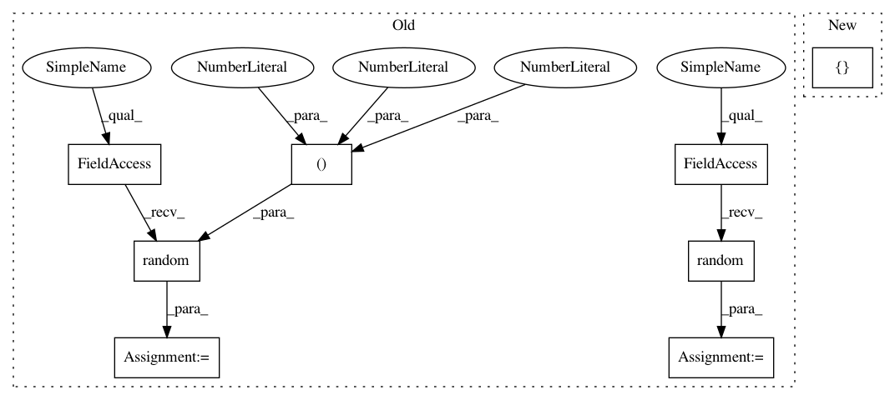

5e797436c3defd2d863ac1ffab11c48dbd42588e,tests/keras/backend/backend_test.py,TestBackend,test_conv3d,#TestBackend#,845
Before Change
data_format="channels_first")
// test in data_format = channels_last
input_shape = (1, 2, 2, 2, 1)
kernel_shape = (2, 2, 2, 1, 1)
check_two_tensor_operation("conv3d", input_shape, kernel_shape,
BACKENDS, cntk_dynamicity=True,
data_format="channels_last")
xval = np.random.random(input_shape)
kernel_val = np.random.random(kernel_shape) - 0.5
// Test invalid use cases
for k in BACKENDS:
with pytest.raises(ValueError):
k.conv3d(k.variable(xval), k.variable(kernel_val), data_format="channels_middle")
After Change
// TF input shape: (samples, conv_dim1, conv_dim2, conv_dim3, input_depth)
// TH kernel shape: (depth, input_depth, x, y, z)
// TF kernel shape: (x, y, z, input_depth, depth)
for (input_shape, kernel_shape, data_format) in [
((2, 3, 4, 5, 4), (2, 2, 2, 3, 4), "channels_first"),
((2, 3, 5, 4, 6), (3, 2, 4, 3, 4), "channels_first"),
((1, 2, 2, 2, 1), (2, 2, 2, 1, 1), "channels_last")]:
check_two_tensor_operation("conv3d", input_shape, kernel_shape,
BACKENDS, cntk_dynamicity=True,
data_format=data_format)
In pattern: SUPERPATTERN
Frequency: 3
Non-data size: 8
Instances
Project Name: keras-team/keras
Commit Name: 5e797436c3defd2d863ac1ffab11c48dbd42588e
Time: 2018-02-25
Author: me@taehoonlee.com
File Name: tests/keras/backend/backend_test.py
Class Name: TestBackend
Method Name: test_conv3d
Project Name: keras-team/keras
Commit Name: 534f6b7975dcd334f6d68eef14598d75c79e7921
Time: 2016-08-28
Author: francois.chollet@gmail.com
File Name: tests/test_model_saving.py
Class Name:
Method Name: test_sequential_model_saving_2
Project Name: keras-team/keras
Commit Name: 5e797436c3defd2d863ac1ffab11c48dbd42588e
Time: 2018-02-25
Author: me@taehoonlee.com
File Name: tests/keras/backend/backend_test.py
Class Name: TestBackend
Method Name: test_conv3d
Project Name: keras-team/keras
Commit Name: 5e797436c3defd2d863ac1ffab11c48dbd42588e
Time: 2018-02-25
Author: me@taehoonlee.com
File Name: tests/keras/backend/backend_test.py
Class Name: TestBackend
Method Name: test_conv2d